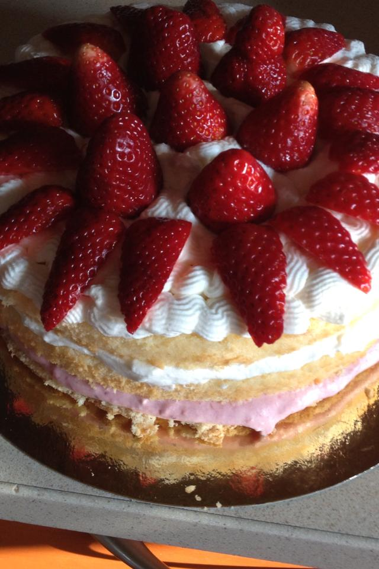
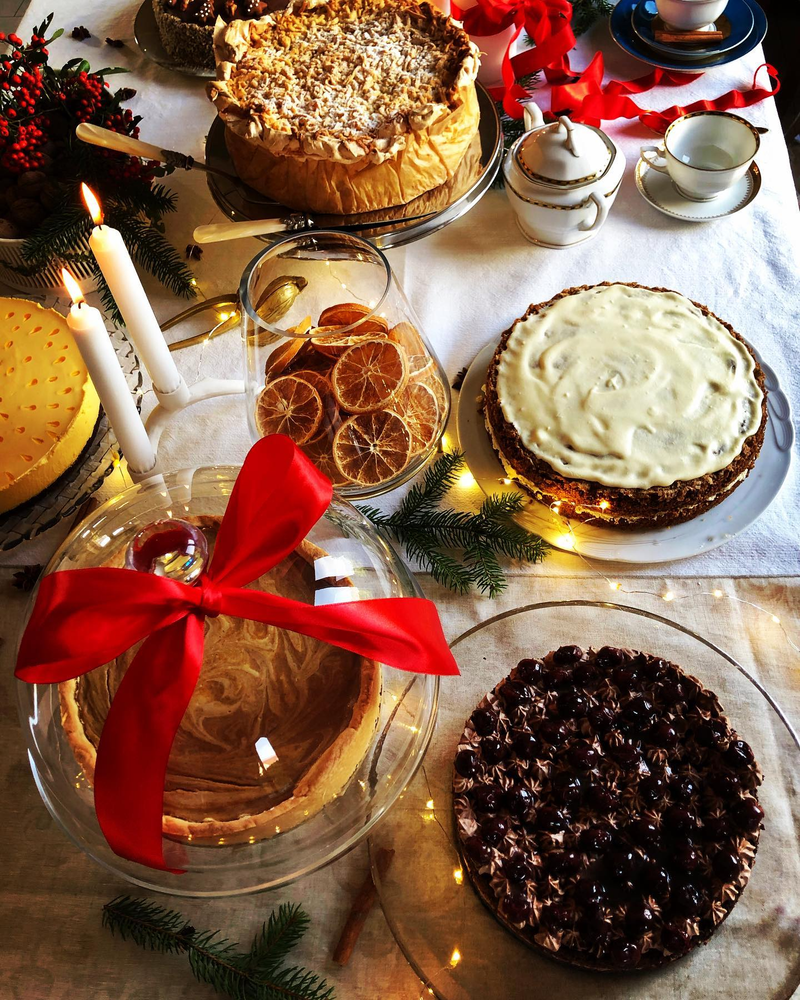
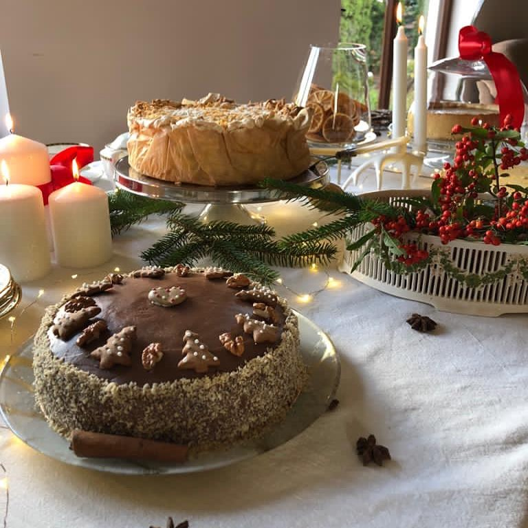

Torty okolicznościowe
Urodziny, rocznice, baby shower, komunie i inne ważne momenty. Dekoracje dobieram do stylu wydarzenia — subtelnie lub odważnie.
- Klasyczne biszkopty i kremy
- Owoce sezonowe i czekoladowe akcenty
- Możliwość dopasowania słodkości
· Poznań · Domowe wypieki z serca ·
Piekę z pasji, która towarzyszy mi od zawsze. Każdy wypiek przygotowuję ręcznie, z uważnością na smak, świeżość i detale.
Od lekkich, owocowych wypieków po klasyczne, bogate smaki — przygotuję słodkości, które pasują do Twojej okazji.
Urodziny, rocznice, baby shower, komunie i inne ważne momenty. Dekoracje dobieram do stylu wydarzenia — subtelnie lub odważnie.
Serniki, szarlotki, brownie, rolady, tarty — wypieki, do których chce się wracać. Idealne do kawy i na rodzinne spotkania.
Na Boże Narodzenie, Wielkanoc i inne święta przygotowuję tradycyjne wypieki.
Mam na imię Asia i pieczenie jest moją pasją od dzieciństwa. Zawsze wierzyłam, że najlepsze wypieki powstają wtedy, gdy robi się je z uważnością i sercem — bez pośpiechu, za to z miłością do smaku i ludzi.
To nie jest przemysłowa cukiernia — to domowa pracownia, w której pieczenie dzieje się spokojnie i z sercem. Każdy tort i każde ciasto przygotowuję ręcznie: od wyboru składników, przez zapach piekącego się biszkoptu, aż po ostatni detal dekoracji. Chcę, żeby w każdym kawałku było czuć świeżość, troskę i to przyjemne, domowe ciepło.

Przykładowe realizacje. Każdy wypiek może wyglądać inaczej — dopasuję styl do Twojej wizji.


Prosty proces — żebyś mógł/mogła spokojnie czekać na efekt.
Podaj okazję, datę, liczbę porcji oraz preferencje smakowe (np. czekolada, owoce, wanilia).
Wspólnie doprecyzujemy wygląd, smak, dodatki i ewentualne alergie. Doradzę najlepsze rozwiązania.
W umówionym terminie wypiek jest gotowy. Otrzymujesz świeży produkt, przygotowany specjalnie dla Ciebie.
Wskazówka: Przy większych okazjach i terminach świątecznych warto napisać wcześniej — wtedy mam więcej przestrzeni na dopracowanie detali.
Chcesz zamówić tort, makowiec albo coś zupełnie nowego? Napisz do mnie — odpowiem i pomogę dobrać najlepszą opcję.